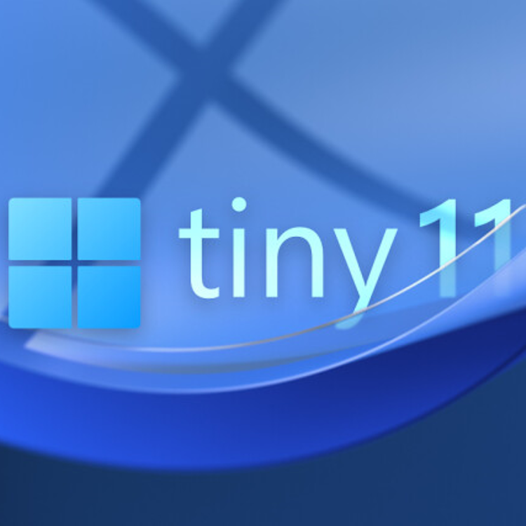

ITDucanet BRNO
IT podpora, která mluví vaší řečí, od roku 1997
IT podpora, která mluví vaší řečí, od roku 1997
Jak všichni víme, Microsoft nám do počítačů cpe čím dál tím víc zbytečností. Začalo to hrou Candy Crush ve Windows 10 a Windows 11 to dotáhl do nesnesitelnosti. Proto se mnoho lidí rozhodlo přejít na Linux. Linux samozřejmě není jediná možnost. Chápu, že přechod z Windows na Linux může být obtížný, proto jsem si připravil následující tipy. Berte v potaz, že Microsoft se aktivně snaží tento proces stále více ztěžovat. Omlouvám se tedy, pokud některé z těchto metod nefungují, bohužel s tím nic neudělám.
Teď si představte Windows 10, ale s jednoduchostí a rychlostí Windows 7. Žádné zbytečné aplikace, žádné přetížení systému - jen čistý výkon.
Tak.. Vítejte ve světě TinyOS - zjednodušeném prostředí Windows zaměřeném na ochranu soukromí. Představte si ho jako svůj oblíbený dort, ale bez zbytečné Microsoft polevy, kterou jste nikdy nechtěli. Můžete si užívat stejné známé prostředí, které používáte každý den, aniž byste se museli přizpůsobovat novému systému, jako je Linux.
Zvyšte svůj výkon a chraňte své soukromí s Tiny. Pokud Vás Tiny zaujalo, ale nevíte jak pokračovat, klikněte zde!
